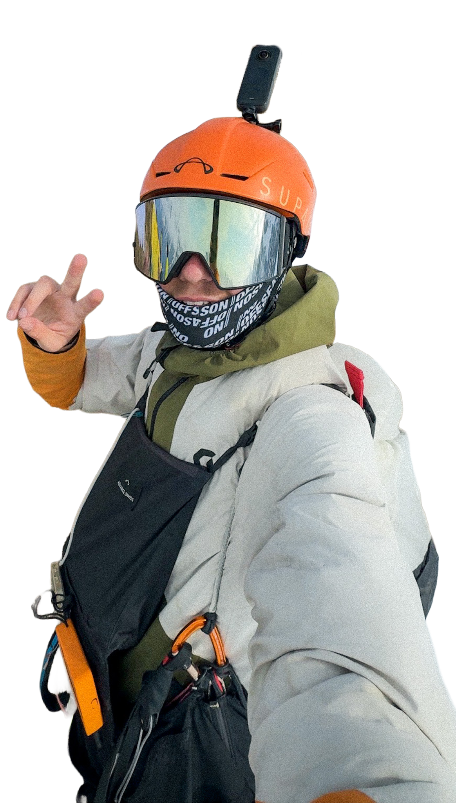

01
Foto & Video
Kameraarbeit, Schnitt, Bildgestaltung, Storytelling und visuelle Produktion.
Visual Content
Bewerbungs-Website
Falsches Passwort – bitte erneut versuchen.
Gleitschirmpilot · Mediamatiker

Hey! Ich bin Thierry. Seit zwei Jahren arbeite ich in der Social Media & Kommunikationsagentur Kornflex in Bern. Nun schliesse ich im Juli 2026 meine Ausbildung als Mediamatiker EFZ ab. Ich liebe es, im Bereich Foto & Video zu arbeiten. Auch Graphicdesign und Animationen interessieren mich sehr. Bei Kornflex habe ich viel zum Thema Social Media, Branding & Kommunikation und Content Creation gelernt, da ich von Anfang an direkt an Kundenprojekten gearbeitet habe. In meiner Freizeit bin ich immer am Fliegen ;) Seit nun einigen Jahren habe ich das Brevet und fliege 150–200 h im Jahr. Meine grosse Faszination dabei ist das Wettkampffliegen — da kann ich meine Fähigkeiten und Skills fortlaufend verbessern. Ich geniesse es, zwischen den Gipfeln der Alpen umher zu cruisen, Thermik zu drehen und zu Toplanden.
Kompetenzen
Kameraarbeit, Schnitt, Bildgestaltung, Storytelling und visuelle Produktion.
Markenauftritt, Kampagnenideen und visuelle Konzepte.
Content Ideen, Planung, Kommunikation und zielgruppengerechte Inhalte.
Layouts, Motion Design, Animationen, Social Posts und Graphic Design.
Meine Lieblingsprogramme
 DaVinci Resolve
DaVinci Resolve
 Photoshop
Photoshop
 Adobe XD
Adobe XD
 Lightroom
Lightroom
Portfolio
Klicke auf ein Projekt, um Details und Medien zu öffnen.
Motivation
Es gibt nicht viele Firmen, bei denen ich das Gefühl habe «Da würde ich gerne Teil davon werden».
ADVANCE ist eine davon.
Ciao ADVANCE-Team,
Ich bin Thierry, 19, und schliesse Ende Juli meine Lehre als Mediamatiker bei der Kornflex Agency in Bern ab. Ich kenne die Gleitschirmszene nicht nur von aussen. Während den letzten Jahren durfte ich am Projekt Chill Out Paragliding mitarbeiten, und seitdem ist für mich klar, dass ich dort weitermachen will, wo Fliegen, Storytelling und Branding zusammenkommen.
Wofür ihr mich konkret einsetzen könntet:
Was mir bei ADVANCE besonders gefällt: Ihr baut Schirme mit einer klaren Haltung – und kommuniziert das auch so. Authentisch, hochwertig, ohne aufgesetzten Marketing-Glanz. Genau in dieser Sprache fühle ich mich zuhause. Am liebsten würde ich im Bereich Kommunikation, Branding und Content Creation einsteigen. Spannend fände ich aber auch, mal in die Produktentwicklung reinzuschauen, einfach um noch besser zu verstehen, worüber ich erzähle.
Verfügbar bin ich ab Anfang bis Mitte September. Von Wilderswil nach Thun ist es nicht weit. Über ein Gespräch würde ich mich sehr freuen, auch wenn aktuell keine passende Stelle offen ist.
Liebe Grüsse
Thierry Stoll
Auf einen Blick
Lebenslauf
Der nächste Schritt — meine Leidenschaft fürs Fliegen mit meinen Fähigkeiten in Medienproduktion, Kommunikation und Design verbinden.
Ausbildung an der BBZ mit Vertiefung in Gestaltung, Medienproduktion, Kommunikation und digitalen Tools wie Photoshop, Illustrator, InDesign, XD und DaVinci Resolve.
Ski Instructor sowie Aufbau und Betrieb des Social Media Auftritts. Verantwortlich für Designelemente wie Flyer und Plakate sowie Planung einer neuen Skischul-Website.
Videocreator & Postproduction für Swiss Olympic Cool and Clean. Content Creation am Seaside Festival Spiez und an der Freestyle WM 2025 in St. Moritz.
Mitarbeit bei der KORNFLEX Agency seit 2024.
Camp Guide, Startleiter und Shop-Betreuung. Leitung von Weiterbildungscamps im Bereich Ski&Fly, Thermik- und Streckenflug sowie Durchführung von Privatcoachings.
Führung und Organisation von Jugendgruppen als Pfadi-Leiter bei der Pfadi Unspunne.
Sekundarschule in Wilderswil.
Primarschule in Wilderswil.
Kontakt
Referenzen